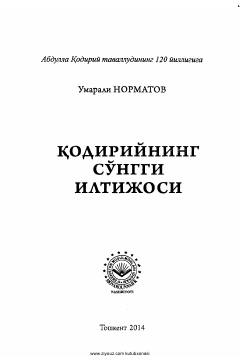

QSAbdulla Qodiriyning hayoti va fojiali soʻnggi kunlariga bagʻishlangan adabiy-tarixiy risola.
Ushbu risola buyuk yozuvchi Abdulla Qodiriyning hayoti, ijodi, eʼtiqodi va fojiali oʻlimi bilan bogʻliq tarixiy haqiqatlar hamda xotiralarga bagʻishlangan. Kitobda adibning soʻnggi damlari, zamondoshlarining xotiralari va qodiriyшуносликning dolzarb masalalari ilmiy-adabiy asosda tahlil qilingan.